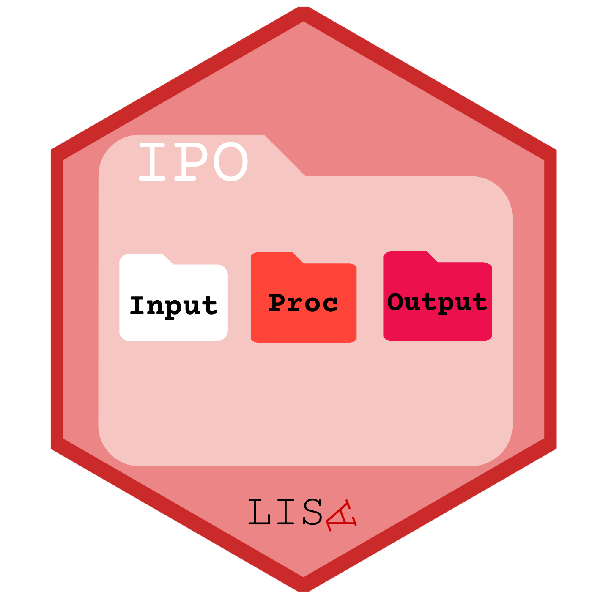

Sesión III: Reproducibilidad y ciencia abierta
La gran mayoría de los datos con los que trabajamos en CSCC no fueron creados para la investigación.
Esto genera una crisis de accesibilidad que se manifiesta en varias dimensiones:
Frente a la crisis de accesibilidad, la ciencia abierta es un cambio cultural que busca aumentar la transparencia y la colaboración en todas las etapas de la investigación.
Un estudio es reproducible si el mismo investigador puede seguir los pasos de su propio análisis y llegar a los mismos resultados.
El Protocolo IPO es una metodología para estructurar proyectos de investigación con datos.
Busca la transparencia y la reproducibilidad del análisis, articulando de manera coherente los pasos del método científico.
Es un flujo de trabajo que separa claramente los datos brutos de los datos procesados y de los resultados finales.

Para implementar el Protocolo IPO, la forma más sencilla es usar RProjects.
cscc-sesion-3).1_input: para datos brutos y procesados2_processing: para scripts de limpieza y transformación3_output: para resultados (tablas, gráficos, informes)1_input/data/original.En las carpetas la estructura luce así:
mi_proyecto/
├── mi_proyecto.Rproj
├── 1_input
│ ├── 1_originales (datos originales, nunca los modifiques)
│ └── 2_procesados (datos limpios o transformados)
├── 2_processing
│ ├── 01_procesamiento_datos.R
│ ├── 02_analisis_descriptivo.R
│ └── 03_modelos.R
├── 3_output
│ ├── tablas
│ └── graficos
└── 4_documentos (reportes, artículos, etc.)